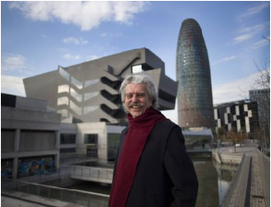

Artículo 1. Recuperar el juicio El desprestigio de medios y de dirigentes ha impulsado las aventuras de nuevos partidos, nuevos canales, nuevas credibilidades. Ver artículo
Artículo 2. Los periodistas vascos premian la trayectoria profesional de Luis R. Aizpeolea La asociación de informadores distingue a Pablo González, encarcelado en Polonia desde marzo, y a título honorífico a Martín Ugalde Ver artículo
 Artículo 3. Lluís Permanyer, Premio Nacional de Periodismo Cultural 2022 El jurado ha destacado “su extraordinaria trayectoria” de más de seis décadas en la prensa histórica, artís- tica y ciudadana en periódicos, radio y televisión Ver artículo